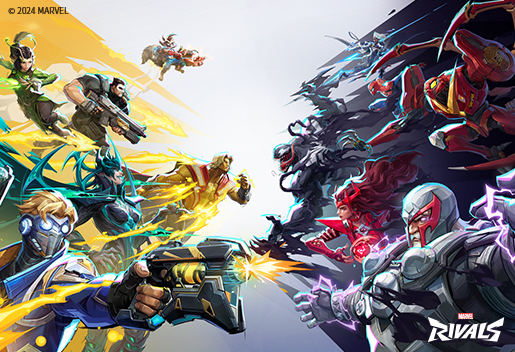

I am a sophmore at warren central highschool I am a part of the volleyabll team and am planning to join the esports team to learn if I want to go pro or become a game dev. I have over 1000 hours on marvel rival and peaked the 3rd highest rank out of 9 different ranks and have gotten 4 different accounts to the 4th highest rank on pc and console. sometimes I stream my gameplay right now I am trying to prove to my self that I am capable of joining the esports team by reaching my peak rank on both pc and console at the same time. and when I am tired of grinding ranked I get an a alternate account and try to learn spiderman who is the hardest charecter in the game but the #1 spiderman player has become a pro player and thinks that he is the best dps melee hero that can be played at the moment and I want to test that for myself but I have to get good on him first